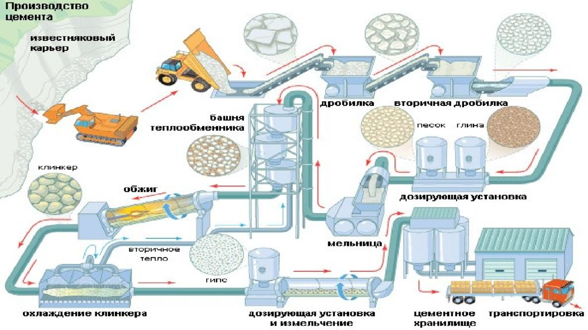

Подбор цемента для различных задач
Цемент играет важную роль в строительной индустрии, обеспечивая прочность и устойчивость строительных конструкций. Выбор правильного типа цемента зависит от ряда факторов, таких как условия эксплуатации, характеристики строительного объекта и требования к прочности.
Рисунок 1: Цементный завод в процессе производства цемента.
1. Портландцемент
Портландцемент - это наиболее распространенный и универсальный тип цемента, который широко используется в различных сферах строительства. Он состоит из глинозема и извести, прокаливаются при высокой температуре. Портландцемент обладает хорошей прочностью и применим для следующих задач:
- Строительства фундаментов и стен
- Бетонных работ
- Устройства дорожных покрытий
- Производства железобетонных конструкций
- Изготовления бетонных блоков и плит
2. Цемент для армированных бетонных конструкций

Рисунок 2: Фотография цемента для армирования бетонных конструкций.
Для строительства армированных бетонных конструкций, таких как мосты, дорожные плиты и другие сооружения, рекомендуется использовать цемент с повышенной прочностью и адгезией к металлической арматуре. Это обычно портландцемент с добавлением флюсов и добавок.
3. Цемент для работы в условиях высокой влажности
Для строительства объектов в условиях повышенной влажности, например, подземных сооружений, бассейнов или объектов в прибрежных зонах, цемент должен быть гидроизолирующим, чтобы обеспечить защиту от проникновения влаги. Используются специальные гидроизоляционные цементы.
4. Белый цемент

Рисунок 3: Белый цемент фотография.
Белый цемент предназначен для производства декоративных и отделочных материалов. Он обладает высокой степенью белизны, что делает его идеальным для приготовления цветного бетона и облицовочных плит. Белый цемент получают путем введения минимального количества железа в состав портландцемента.
5. Цемент для специальных конструкций
Существуют специальные виды цемента, разработанные для определенных типов конструкций. Например, цемент для быстрой фиксации используется при ремонте дорог и тротуаров, а огнестойкий цемент применяется для строительства объектов, требующих высокой огнестойкости.
6. Пластический цемент
Пластический цемент используется для заделки трещин и швов, а также для устранения неровностей в поверхности бетонных конструкций. Он хорошо подходит для ремонтных работ и реставрации бетонных поверхностей.
7. Гидрофобизированный цемент

Рисунок 4: "Фотография гидрофобизированного цемента.
Этот вид цемента обладает способностью отталкивать воду и применяется при строительстве объектов, подверженных воздействию влаги, таких как мосты, дамбы и плотины. Гидрофобизированный цемент создает гидрофобные связи между частицами цемента, что делает бетон более устойчивым к воздействию воды.
8. Алюминатный цемент
Алюминатный цемент используется для создания быстротвердеющих бетонных смесей, таких как фундаменты в условиях низких температур или в местах с высокой влажностью. Он содержит высокие концентрации алюминатов, что делает его более склонным к гидратации и быстрому отверждению.
Заключение
Выбор правильного типа цемента играет важную роль в процессе строительства и определяет качество и долговечность конечного результата. При подборе цемента необходимо учитывать требования проекта, условия строительства и рекомендации специалистов. Правильный выбор цемента поможет обеспечить прочность и устойчивость строительных конструкций на протяжении долгого времени.